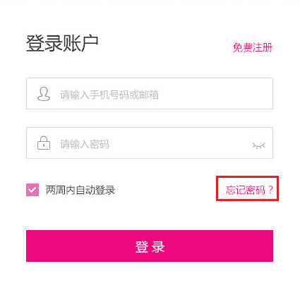
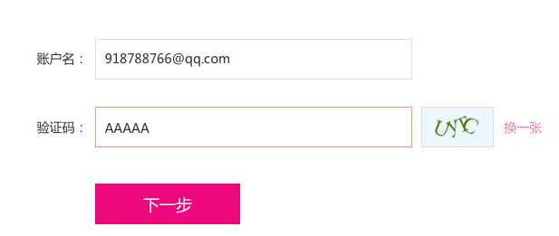
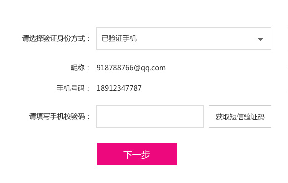
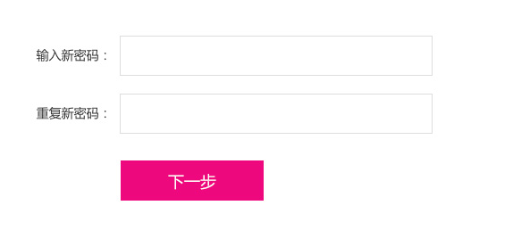

首页 > 帮助中心
购物流程
联系我们
售后服务
退换货政策
物流查询
用户协议
找回密码
正品保障
找回密码
Step1：进入登录界面，点击“忘记密码”，如下图

Step2：填写你的账户名（手机号或绑定邮箱）和正确的验证码，点击“下一步”

Step3:选择验证身份方式，获取验证码并填写，点击“下一步”
温馨提示：
（1）如果您选择的是手机验证方式，修改密码的验证码将发送到您的手机上。
（2）如果您选择的是邮箱验证方式，修改密码的验证码将发送到您的绑定邮箱。

Step4：输入新密码并确认，点击“下一步”，您就成功找回密码。
